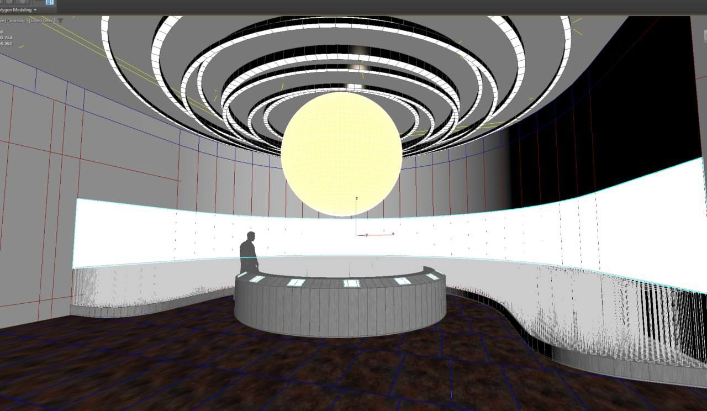
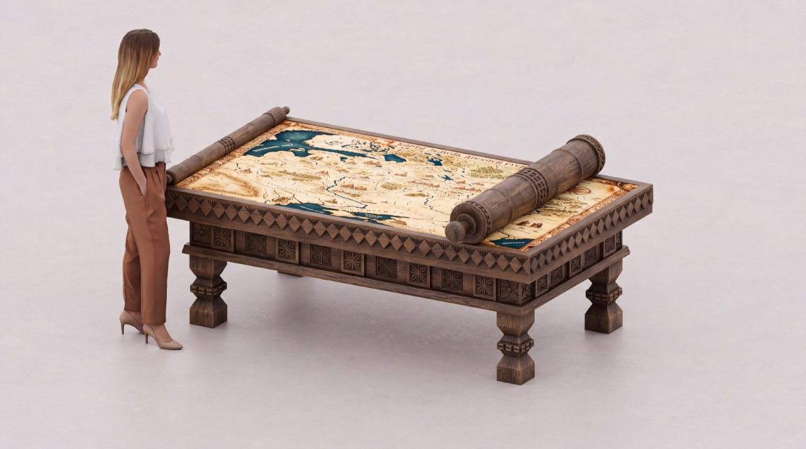
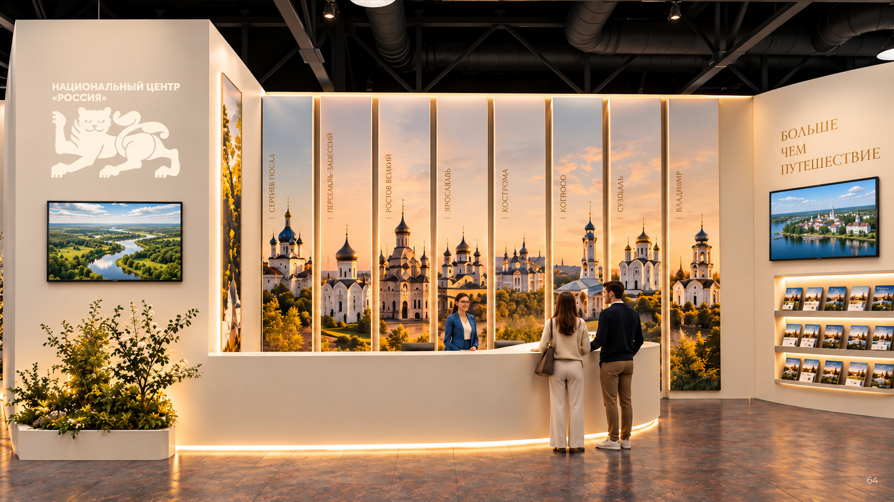
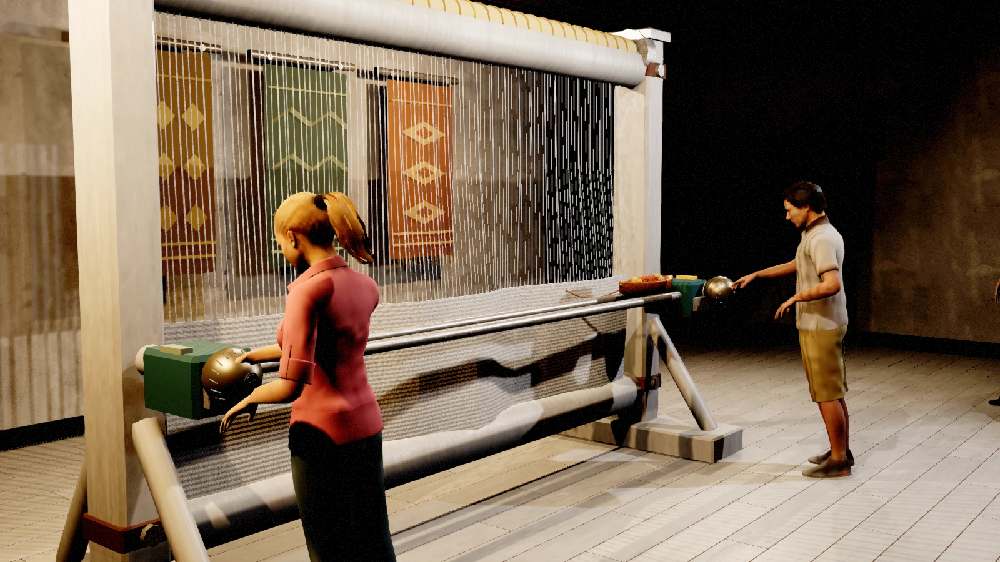

Финальная зона
Согласовано 9 ноября. Экран длиной 21 м и высотой 1,5 м. Нижний край экрана в 1 м от пола. Высота колосьев — 1 м. Пейзаж на экране показан для сравнения посадки.


Как расположить колосья перед панорамой?


Выставка в Национальном центре «Россия»
Сравните два варианта с исходным кадром. Нажмите на изображение, чтобы рассмотреть детали.
Согласовано 9 ноября. Экран длиной 21 м и высотой 1,5 м. Нижний край экрана в 1 м от пола. Высота колосьев — 1 м. Пейзаж на экране показан для сравнения посадки.

Согласовано 9 ноября. Заказчик одобрил замену центрального объекта на стол. Крупный план из переписки показывает резное основание, карту и свиток.



Согласовано 25 октября. Заказчик согласовал замену диодного экрана на лайтбокс и размещение отдельных экранов в стенах консультационной зоны.



После обсуждения выбранный вариант и комментарии можно записать в реестр решений Excel.
Наведите на обложку для просмотра без звука. Нажмите, чтобы открыть ролик со звуком. Под обложкой можно попробовать прибор в 3D или посмотреть его чертежи.
Сценарии девяти роликов · Word Все чертежи приборов →

Потяните канат, чтобы сдвинуть баржу к пристани. Напарник может сменить вас у того же ворота.
Тяните по очереди или задайте ритм в одиночку. В экранной версии попробуйте довести судно до пристани.
Запустить действие
Нажмите на мех. На экране стеклодув выдует стакан, алмазчик нарежет грани, а луч разложится на цвета.
Ручной мех через шланг передаёт давление к датчику. В экранном сюжете горячая форма остывает. Мастер-алмазчик подводит гладкий стакан к мокрому кругу. Луч преломляется в готовом хрустале.
Запустить действие
Сотрите туман ладонью. Останьтесь у арки и посмотрите, как меняются времена года, берега и жизнь реки.
Датчик перед аркой отслеживает ладонь. Прозрачный след открывает пейзаж. После жеста каждые пять секунд появляются новые виды. Каждое окно показывает все 24 до повтора.
Запустить действие
Три места дают три голоса. Сыграйте один, пригласите соседей и выберите рисунок общего перезвона.
Напольные датчики независимо включают низкий, средний и высокий голоса. Три корпуса разного диаметра. В модели звучат ре, фа-диез и ля. Выберите один из трёх рисунков. Световые вспышки совпадают с ударами.
Запустить действие
Добавьте лепесток городецкой розе. Камера над блюдом показывает ваш мазок крупно на стене.
В 3D передвиньте ползунок и проследите за кончиком кисти. На стене видно, как ложится краска на то же деревянное блюдо.
Запустить действие
Отметьте интересы на билете и поднесите его к считывателю. Ваши отметки превращаются в маршрут на панораме.
Опустите штамп и подведите билет под камеру. На панораме появятся старт и три остановки примерного маршрута.
Запустить действие
Передавайте челнок от одной стороны рамы к другой. Каждый проход добавляет полосу к общему полотну.
Начните слева, верните челнок справа и проведите его ещё раз. Один посетитель может выполнить обе роли.
Запустить действие
Проследите все 3 530 км Волги, от Волговерховья до Каспия. Три клавиши ведут в верхнее, среднее и нижнее течение.
На столе и на стене видна вся река с городами, притоками и линейкой 200 км. Три рельефные клавиши выбирают участок. Экран показывает водоснабжение, перевозки, гидроэнергетику, орошение и жизнь дельты.
Запустить действие
Подведите зазывалу к балагану. Раздастся его выкрик, раскроется занавес и закружится карусель.
Передвиньте зазывалу ползунком или нажмите кнопку у сцены. Когда рука доведёт каретку до отметки, посмотрите на занавес и карусель. Кнопка «Сначала» вернёт ярмарку к тишине.
Запустить действиеОснова — перечень мультимедийных инсталляций от 7 ноября и обсуждение от 10 ноября. Расположение участников, оборудование и три новых сценария предложены для обсуждения. План доработки девяти сцен в Word ↓
Золотое кольцо
Повестка для проектной команды по переписке до 17 ноября.
3 ноября зафиксировали количество. Андрей подготовил рабочий список 7 ноября.
К встрече. Подтвердить список или назвать замены, чтобы Андрей составил задания для каждой зоны.
С 5 ноября на выборе два пролога. Первый открывает проход кинетическими пилонами с мэппингом, второй начинает путешествие со станционного смотрителя.
К встрече. Выбрать один сценарий. Координатор и архитектор уточнят выдачу билетов и движение посетителей.
Архитектурная группа запросила согласование образцов 9 ноября. Предложены три объёма работ — сохранить покрытие, заменить часть или весь участок.
К встрече. Выбрать образец и границы замены для визуализации и расчёта.
10 ноября команда обсуждала сопротивление лямки и реакцию экрана.
К встрече. Андрею, Сергею и Сане предлагается проверить действие на простом стенде и определить ответственного за прототип.
12 ноября Заказчик потребовал включить экран в каждое региональное задание. Для обсуждения предложены видео и интерактивный каталог.
К встрече. с куратором регионов определить содержание и его источники. С заказчиком решить, кто предоставляет экран, медиасервер и оплату.
К аркам, центральной конструкции и оформлению столбов были замечания 26 октября. Пакет участия области передан 17 ноября.
К встрече. координатору и архитектору получить от куратора регионов замечания к конкретным видам или подтверждение выбранного решения.
В пакете от 16 ноября предложено, чтобы Национальный центр отвечал за основную застройку, а область передавала экспонаты и художественные изделия.
К встрече. Согласовать перечень изделий, права на материалы, контакт от области и сроки передачи.
Основа расчёта от 15 октября — 711,5 м² для VARS и 1 073 м² для EURO. Общие работы отнесены к ЕЭС.
К встрече. Получить расчёт VARS, сверить состав у подрядчиков, учесть замены и назначить ответственного за общую смету.
Подрядчики пересчитывают состав после изменений. Для выбора нужен сопоставимый расчёт по зонам.
К встрече. Зафиксировать лимит, обязательные объекты и допустимые сокращения.
Открытие в обоих документах — 21 мая 2027 года. В октябрьской переписке закрытие указано 3 октября, в ноябрьском пакете — 21 октября.
К встрече. Подтвердить дату закрытия перед рассылкой документов регионам.
Золотое кольцо
Откройте презентацию для общего обсуждения или скачайте материалы для работы с вариантами.
В альбоме — 18 листов A3. В реестре — детали, проверенные зазоры и решения, которые предстоит принять на встрече.
Пилот на ткацком стане, художественные решения по каждому залу и вопросы для совместного просмотра.
Скачать Word ↓Финальная зона, стол во Владимире и лайтбокс с экранами. По два варианта на каждом листе.
Скачать Word ↓По листу на каждый зал. Общий вид, крупный план и объяснения трёх рабочих узлов.
Скачать Word ↓Шесть пар кадров и ссылки на демонстрации для обсуждения на встрече.
Скачать Word ↓Музейные примеры, технические варианты для девяти сцен и план проверки на посетителях.
Скачать Word ↓Согласования и открытые вопросы. Впишите выбор, ответственного и срок по итогам встречи.
Скачать Excel ↓
Два кадра из Unreal Engine для выбора света. Посмотрите, видно ли с места зрителя, кто принимает челнок и где на полотне появляется новый ряд.

12 слайдов о маршруте посетителя, региональных зонах и решениях для следующего этапа.
Начать показ слайдовВ архиве — визуализации к обсуждению лайтбокса от 25 октября, финальной зоны и стола от 9 ноября, а также региональный пакет, переданный 17 ноября.
Открыть архив на Яндекс Диске ↗